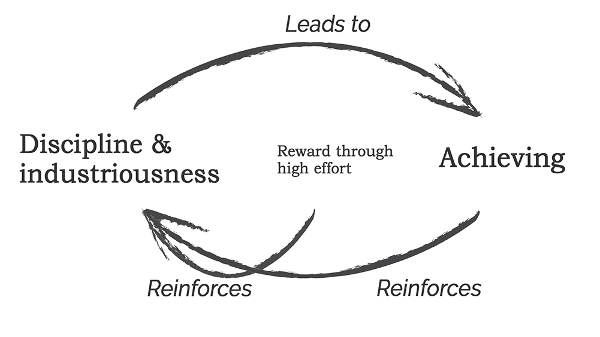

Why Learned Industriousness Spreads to all Life Areas
The complex version of "it gets easier"
You too probably know a lot of people that make new years’ resolutions. The new year just feels like a reset
and people have time to reflect. I do have the feeling that Covid-19 somehow works the same way for many
people, as a reset, and that people are using it to set “Coronavirus resolutions”.
We may notice personality traits that we don’t like. And also missing skills that we want to work on. So we
start setting goals. And what makes us set these goals? Ambition. However, ambition alone won't help us
achieve these goals. Above all, intelligence and industriousness (i.e. diligence) are important factors if
we want to achieve anything in life, whether it’s learning to program or to stop unwanted behaviors. But
let's leave intelligence out for now and focus on industriousness. Because industriousness enhances
discipline.
The idea of Learned Industriousness
I want to introduce you to the idea of learned industriousness, which was researched by
Eisenberger. This
theory states that "if an individual is rewarded for putting a large amount of effort into an activity, the
sensation of high effort takes on secondary reward properties that lessen effort’s general aversiveness. In
accord with this view, research indicates that reward for high effort involving one or more activities
increases the subsequent effort exerted in other activities."
So in other words, it seems that if we control and increase our industriousness in one activity, this
industriousness generalizes and affects other areas of our lives because the high effort itself (and the
achievement that hopefully comes with it), feels rewarding and therefore, being more disciplined in other
activities becomes easier. This also fits the concept of
neuroplasticity, which is the idea that your brain is
able to alter its physical structure, to repair damaged regions, to grow new neurons and get rid of old ones.
Relating to the idea of learned industriousness and the following generalization of discipline, this implies
that our brain structure changes with that high effort → reward process. E.g. the area that is responsible for
impulsive control (the Prefrontal Cortex), which is active when we force ourselves to resist the temptation of
ice cream and Netflix to do something more productive, is growing and or restructuring itself.
In essence, because we train ourselves to be industrious in one life activity, it is easier for us to be
disciplined in other life activities. Of course, this does not mean, that once one is putting high effort into
one activity, everything else will automatically become as easy as a piece of cake.
A real-life example and why it is easier for me to be disciplined upfront now
When I first encountered the idea of learned industriousness something immediately clicked and I gained a new
perspective on some of my thoughts. Let me give you an example. I know a lot of people that lift weights
regularly and maintain a healthy diet. These people rarely do not achieve personal goals in various other life
areas. And I always thought:" Well that makes sense, they are disciplined personalities so they manage to work
out regularly and eat healthily and achieve other things." However, based on the idea above, discipline and
achievement seem to have more of a feedback loop relationship. These personalities might also achieve things in
other areas of life because they do lift weights regularly. The high effort and achievement in sports then
reinforce discipline in them, which helps to be more successful in other areas of life as well. So to say, I
found myself partly affected by the cause-effect bias.

Discipline and high effort building a cycle
But you too might think first:" Wait, do I not need to be disciplined first to get the cycle going?" Here
comes the cool part. Being aware of this idea makes it easier to be disciplined from the start. Now,
whenever I need to do something and feel resistance towards it, I tell myself that not alone the effort I
put in this activity will give me a rewarding feeling, but also I am training my brain to help me achieve my
goals in other life areas more easily.
Remember how I skipped intelligence at the beginning? Well, it is interesting to notice that even though
industriousness can be learned and generalized, intelligence can not. We can’t increase our intelligence to be
smarter in general. We might study and know more things, but we do not get more intelligent (at least until
Elon Musk has figured out
Computer-Brain
interfaces with Neuralink).
See and comment this article on LinkedIn, I publish everything there too.